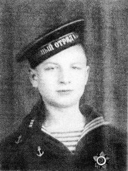
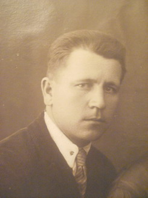
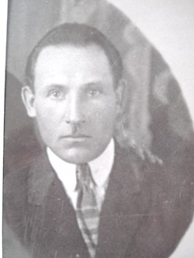
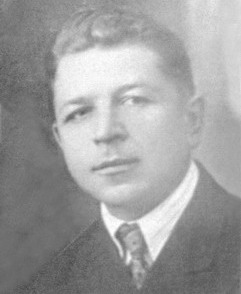

|
ИХ ОТНЯЛА У НАС ВОЙНА
Близится 69-я годовщина начала этой ужасной войны с фашистской Германией. Невольно возникают воспоминания о моих ближайших родственниках (их было 5 человек), «с кровавых не вернувшихся полей». Они, не щадя своих сил, сражались за Родину. Вкратце расскажу о каждом из них.
Мой отец Устинов Александр Филаретович, 1902 года рождения, с 9 августа 1941 г. в составе 46 отдельной кавалерийской дивизии сражался на Калининском фронте в течение года, попал в окружение и плен; перенес все ужасы фашистских лагерей и умер от туберкулеза легких за несколько дней до Победы.
Мой дядя Лобачев Константин Тихонович, 1903 года рождения, и его сын Павел, мой двоюродный брат. С этой семьей мы были особенно близки. Отца и сына объединяло то, что они были большими патриотами своей страны, коммунист и комсомолец. Константин Тихонович родился в большой семье (7 детей, он старший), рано потерял отца, после начальной школы с 12 лет работал в магазине, с 14 лет кузнец-молотобоец. С 17 лет участвовал в гражданской войне, вступил в партию. На кожевенном предприятии вырос от рабочего до руководителя, далее возглавлял организацию «Заготживсырье» республики Казахстан. Когда началась война, делал большие пожертвования для фронта, имел бронь. Но не таков был Константин Тихонович, чтобы ею воспользоваться. Он добровольно ушел на фронт рядовым, служил в пехотном полку под Сталинградом с ноября 1942 г. Через 2 месяца 13 января 1943 г. погиб в бою, похоронен в братской могиле в Волгоградской области.

Лобачев Павел Константинович, 1926 года рождения, экстерном окончил школу в 1943 г., трудился на сельхозработах и в мастерской по изготовлению костылей для раненых. Мечтал отомстить за отца. Осенью поступил в мореходное училище в Ленинграде, ускоренный курс прошел за 6 месяцев, направлен рулевым на сторожевой катер в Ладожскую флотилию. 26 июня 1944 г. в первом же бою при высадке десанта на берег пытался вынести ящик с минами из-под обстрела и погиб. За мужество и проявленную храбрость посмертно награжден орденом Отечественной войны 2 степени. Похоронен в братской могиле в Волховском районе Ленинградской области.
Мой дядя Белоусов Дмитрий Павлович, 1902 года рождения, был квалифицированным рабочим-вальщиком, имел семью; призван в армию в 1942 г. В артиллерийском полку 173 стрелковой дивизии прошел путь от рядового до младшего лейтенанта, сражался на Московском направлении и Калининском фронте, был ранен, лечился в эвакогоспитале в Москве. Позднее направлен в Сталинград, погиб 8 ноября 1942 г. Похоронен в братской могиле в Городищенском районе Волгоградской области.
Мой дядя Пальчиков Григорий Матвеевич, 1908 года рождения, потерял жену ещё до войны, на руках осталась маленькая дочь. Призван на фронт в 1941 г., сражался рядовым в артиллерийском полку на Северо-Западном фронте, был пулеметчиком. Погиб в ноябре 1941 г. под Ленинградом. Дочь-сирота воспитывалась в семье тети.
Так закончилась жизнь всей мужской половины моих родственников. Они все хотели вернуться домой в свои семьи и только с Победой. Об этом они писали в своих письмах. Пусть светлая память о них сохранится в наших сердцах!
Устинова Людмила Александровна (г. Тверь) |